Crosslinking, fragmentation, antibodies and controls; why transcription factors and histone marks give different signals
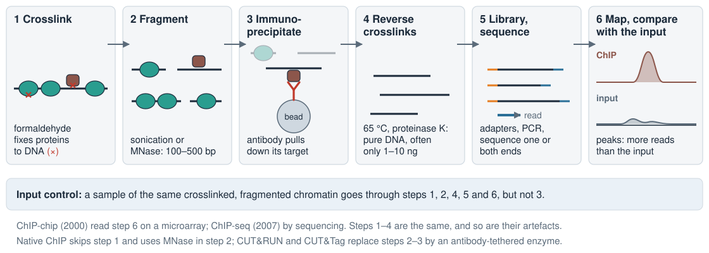
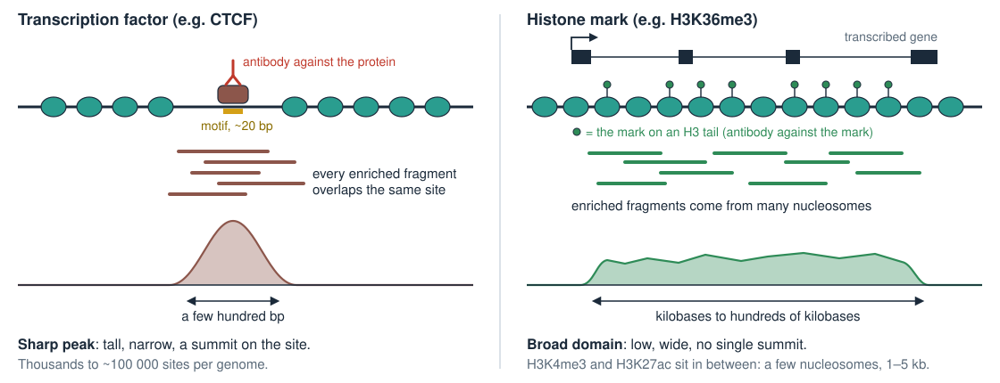
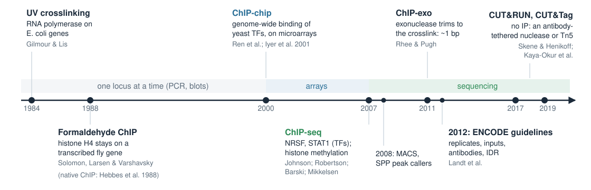
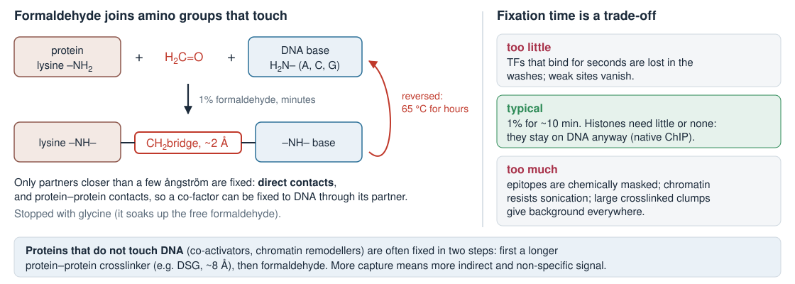
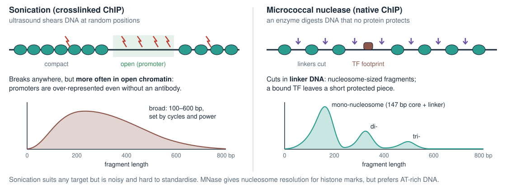
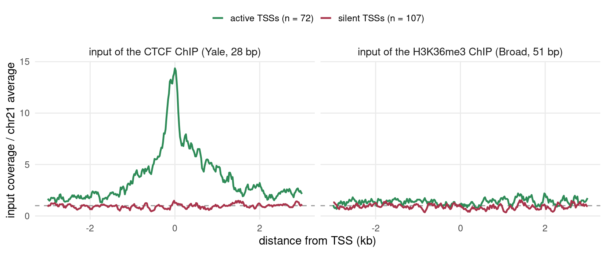
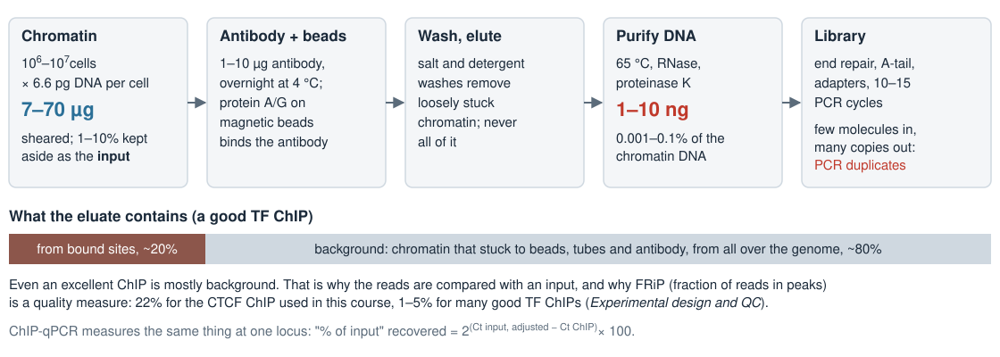
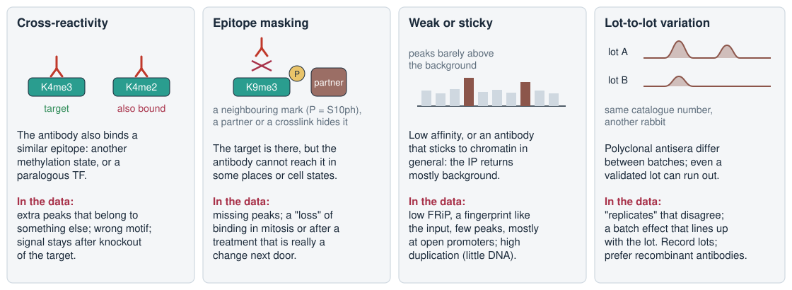
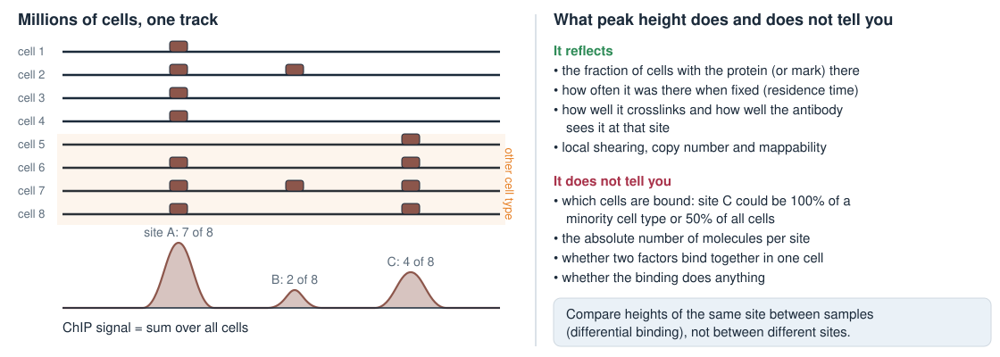
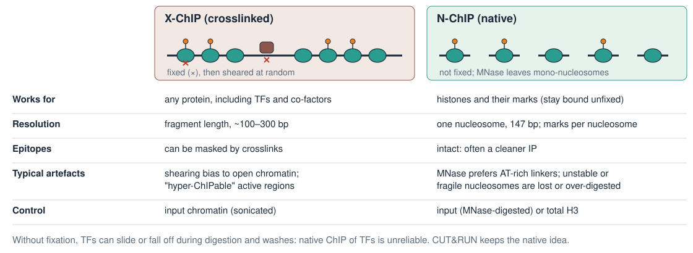
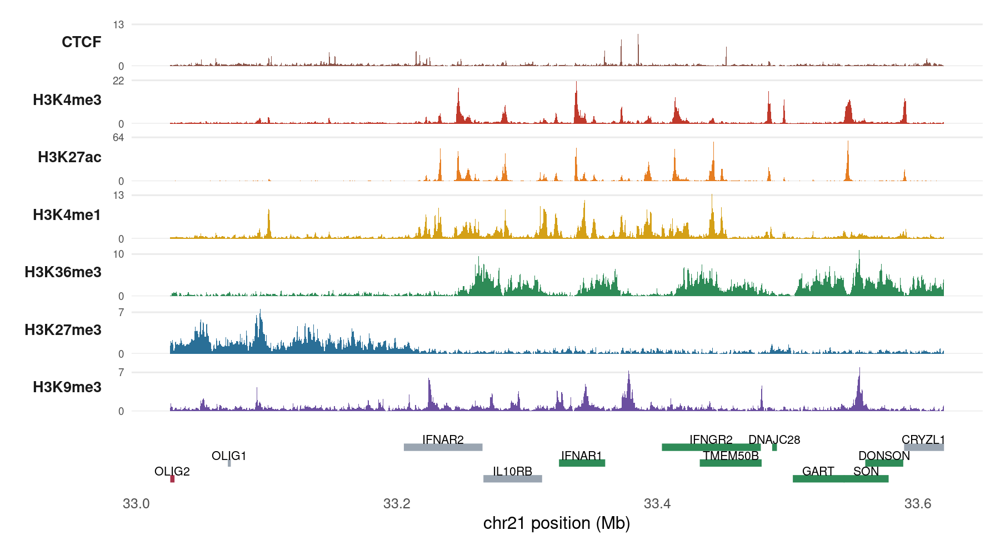
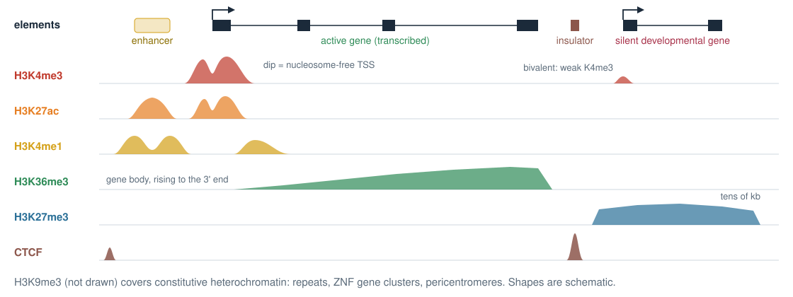
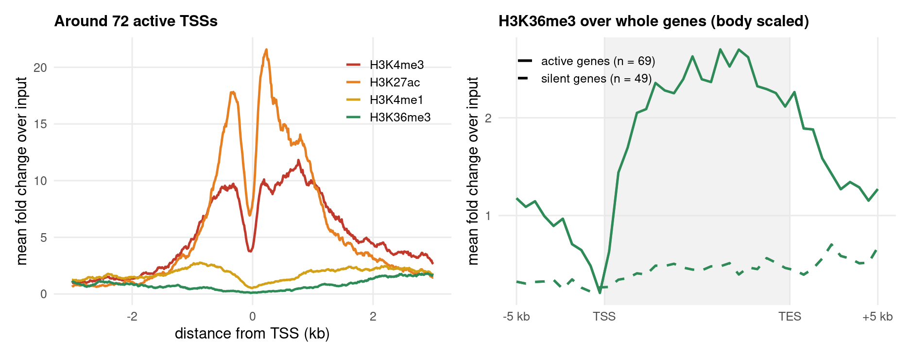
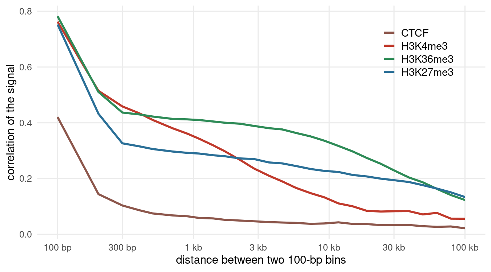
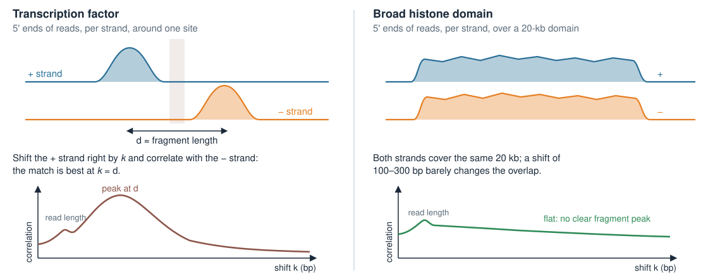
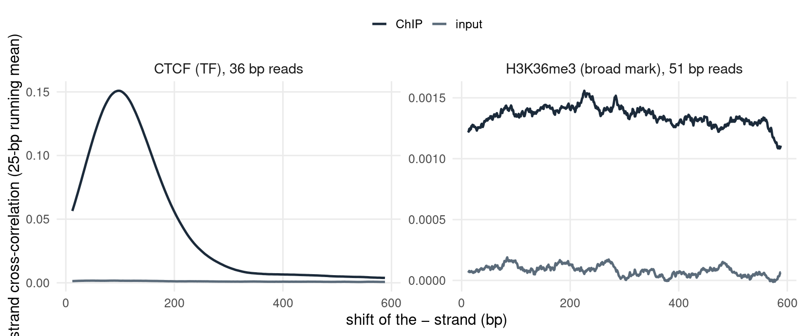
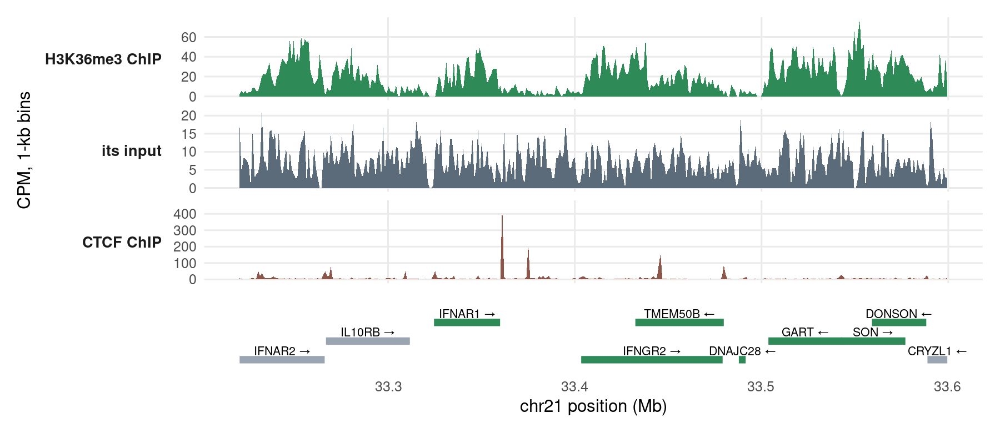
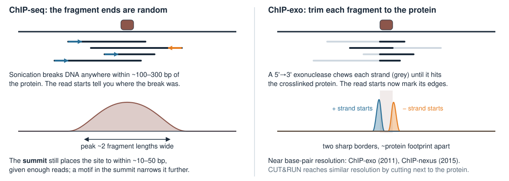
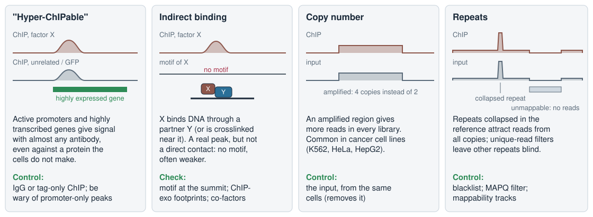
| transcription factor | histone mark | |
|---|---|---|
| cells per IP | 106–107 | 105–106 (often fewer) |
| fixation | formaldehyde, ~10 min (+ DSG for co-factors) | light or none (native) |
| fragmentation | sonication, 100–300 bp | sonication or MNase (mono-nucleosomes) |
| antibody | validated, ideally a knockout control; or an epitope tag | validated on modified peptides/nucleosomes; lot recorded |
| control | input from the same chromatin (IgG optional) | input; total H3 for native ChIP |
| depth (ENCODE) | 20 M usable fragments per replicate | 20 M (narrow marks) or 45 M (broad marks) |
| replicates | ≥ 2 biological | ≥ 2 biological |
| reads | single-end 50 bp is enough; paired-end measures fragments | same; paired-end helps in repeats |
| peak calling | narrow peaks, summits, IDR | narrow or broad domains |
| method | what changes | why use it |
|---|---|---|
| ChIP-exo, ChIP-nexus | exonuclease trims fragments to the crosslink | near-bp resolution, footprints |
| Mint-ChIP and other barcoded ChIP | chromatin of many samples barcoded, then pooled for one IP | many samples, little material, comparable IPs |
| CUT&RUN | antibody-tethered MNase cuts next to the target, in permeabilised nuclei | low background, few cells, no sonication |
| CUT&Tag | antibody-tethered Tn5 inserts adapters at the target | very few cells, single-cell versions |
| spike-in ChIP (ChIP-Rx) | foreign chromatin added before the IP | quantitative comparisons under global changes |
| idea | key fact |
|---|---|
| crosslinking | formaldehyde joins amines within ~2 Å; captures direct and indirect contacts; reversed at 65 °C |
| fragmentation | sonication: random-ish, biased to open chromatin; MNase: linker cuts, nucleosome resolution (native ChIP) |
| IP and library | a few ng of DNA from µg of chromatin, mostly background; PCR duplicates when yields are low |
| antibodies | cross-reactivity, masking, weak/sticky, lot variation: each with a signature in the data |
| input | same chromatin, no IP; shows shearing, copy number and mappability; must match the ChIP |
| signal shape | TF: sharp peak around the site; histone marks: nucleosome-scale to 100-kb domains |
| strands | + reads left, − reads right of a site, d apart; flat cross-correlation for broad marks |
| interpretation | a population average; height ≠ occupancy; peaks can be indirect or artefacts |
Not required reading and not examined. For those who want the primary literature.